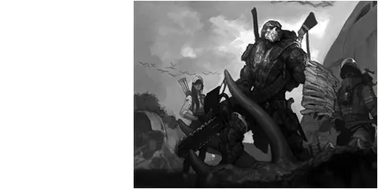

Home › Social & Economy
 Clans Live
Clans Live
Team up with other players, set up ranks, share land and storage, level the clan up by playing and donating, get clan buffs and research, and form alliances with other clans.
Some sections on this page are not ready yet

A clan is a permanent group of players. It has a leader, ranks, its own chat room, and shared Clan Enclaves and storage. The more members play and donate to the Clan Funds, the higher the clan level: more members, more alliance slots, buffs for every member, and clan buildings unlocked.
What you can do
- Create your own clan, or ask to join an existing one
- Set up ranks, name them, and choose what each rank may do
- Talk in the clan chat (works across all islands)
- Wear a clan honour flag on your back
- Declare a Clan Enclave (clan level 5 or higher) and build/share storage there by rank
- Play and donate T-Stones to the Clan Funds → clan level goes up → buffs
- Form alliances with other clans
- Run clan research at a research center (paid from the Clan Funds) → every member gets a temporary buff
- Read the clan timeline to see who did what and when
Creating and joining a clan Live
- Open the Clan menu → Create Clan → pick a name and pay the creation cost
- Or search for a clan and press Request to Join — wait for someone with the right to approve you (you can cancel your request)
- If someone invites you, a message appears on screen — go to that clan and request to join; you get in at once without approval
| Item | Value |
|---|---|
| Creation cost | 5,000 T-Stones |
| Clan name | 2–16 characters · must be unique |
| Clans per character | 1 at a time |
| Clan notice / introduction | up to 300 / 500 characters |
| Clan emblem image | up to 4 KB |
Leaving: if the leader leaves, leadership passes to the next-highest rank (same rank = whoever joined first). If the last member leaves, the clan is disbanded — all Clan Enclaves and the buildings on them go to that last leader · leaving, being kicked or the clan disbanding removes the clan's buffs at once.
Ranks and permissions Live
A new clan has 3 ranks. The default rank names are in Thai (หัวหน้า / รองหัวหน้า / สมาชิก); the leader can rename them.
| Rank | Permissions |
|---|---|
| Leader (หัวหน้า) | Everything · rename the clan · manage alliances · hand over leadership |
| Vice leader (รองหัวหน้า) | All 5 permissions: approve applicants · change ranks/kick · edit clan info · manage Clan Enclaves · research |
| Member (สมาชิก) | No special permissions |
- You can add ranks, up to 10 ranks in total · rank names 1–12 characters · ranks can be reordered by dragging
- Someone with the rank-change permission can only manage members of a lower rank · nobody can kick or demote the leader
- If the leader gives someone the leader rank, leadership is handed over (the old leader drops to the next-highest rank)
- Deleting a rank moves its members to another rank automatically
Clan chat and notifications Live
- The Clan chat channel reaches members on every island · after you join or leave a clan, the new clan's chat works by itself
- You can switch notifications on or off per channel; the server remembers your choice (default = all off)
Clan honour flags Live
Clan members can wear a flag on their back that others can see. There are 3: The Strong · The Mighty · The Unbreakable. This server has no clan wars, so every member may wear any of them. Leaving, being kicked, or the clan disbanding removes the flag automatically.
Clan Enclaves and storage Live
- The leader, or a rank allowed to manage enclaves, can declare a Clan Enclave on a stable island once the clan is level 5 or higher · the number of Clan Enclaves across all islands is capped by clan level (level 5 = 12 · +3 per level · level 25 = 72) · one per island
- Declaring costs 10,000 × the number of enclaves after declaring (the first 10,000 · the second 20,000 …) · an enclave can be expanded up to 8 cells, at 10,000 · 11,000 · 12,000 · 13,000 · 14,000 · 15,000 · 17,000 per cell (size 1→2 … 7→8) — both are paid from the Clan Funds
- Members can build on the Clan Enclave, and members' buildings don't count as someone else's property there
- Clan buildings (Censer Building, Clan Storage, research centers, etc.) can be built when you are in the clan and the clan has reached the required level (clan level table) · buildings already built stay if the level ever drops
- Default rights on a Clan Enclave: leader/enclave managers = everything · members = enter, use, put in, take out, build (no dismantling) — the leader can change rights per rank
- Each box/warehouse can be set per rank, including how many items a rank may take per day (unlimited / none / a set number · counted over 24 hours)
- The server keeps a log of who put in or took what from boxes on the Clan Enclave (latest 300 entries per clan)
General land rules: Land · boxes: Storage · wear and tear: Decay
Clan timeline Live
The Clan menu has a Timeline page that lists the clan's events page by page (20 per page · the latest 200 are kept) in 3 groups: Clan (created, notice/introduction/emblem edited, level up) · Members (joined, left, kicked, rank changed) · Finance (donations and Clan Funds spending — research, declaring/expanding enclaves).
Clan Funds and clan level Live
Any member can Donate T-Stones to the Clan Funds · clan level rises with clan exp, which comes two ways:
- 1 T-Stone donated = 1 clan exp
- Playing: 10% of whatever exp a member earns while playing (from every source) also goes into the clan's exp (added in batches, not instantly)
Funds cannot be withdrawn to a player; they can only pay for clan research and for declaring/expanding Clan Enclaves.
| Clan level | Total exp needed | Max members | Alliance slots | Max Clan Enclaves | Unlocks |
|---|---|---|---|---|---|
| 1 | 0 | 10 | 2 | — | — |
| 2 | 30,958 | 10 | 2 | — | buff: EXP +5% |
| 3 | 140,728 | 15 | 2 | — | — |
| 4 | 408,500 | 15 | 2 | — | buff: sailing/warp cost −10% |
| 5 | 968,964 | 20 | 3 | 12 | can declare Clan Enclaves |
| 6 | 2,047,646 | 20 | 3 | 15 | buff: smaller death drop · Censer Building |
| 7 | 4,016,401 | 20 | 3 | 18 | Defense Tower |
| 8 | 7,480,457 | 20 | 3 | 21 | buff: T-Stones from systems +10% |
| 9 | 13,414,311 | 20 | 3 | 24 | Clan Storage |
| 10 | 23,372,897 | 30 | 4 | 27 | Warp Hole Tuner |
| 11 | 39,818,314 | 30 | 4 | 30 | Collection Research Center |
| 12 | 66,623,441 | 30 | 4 | 33 | Exploration Research Center |
| 13 | 96,638,763 | 30 | 4 | 36 | Combat Research Center |
| 14 | 129,945,627 | 30 | 4 | 39 | Catapult |
| 15 | 166,620,941 | 40 | 5 | 42 | Crafting Research Center |
| 16 | 206,737,717 | 40 | 5 | 45 | Advanced Research Center |
| 17 | 250,365,521 | 40 | 5 | 48 | Clan Hall |
| 18 | 297,570,846 | 40 | 5 | 51 | — |
| 19 | 348,417,413 | 40 | 5 | 54 | — |
| 20 | 402,966,448 | 50 | 6 | 57 | — |
| 21 | 461,276,896 | 51 | 6 | 60 | — |
| 22 | 523,405,625 | 52 | 6 | 63 | — |
| 23 | 589,407,591 | 53 | 6 | 66 | — |
| 24 | 659,335,988 | 54 | 6 | 69 | — |
| 25 (max) | 733,242,379 | 55 | 7 | 72 | — |
Clan level buffs apply to every member in the clan at the clan's current level (no expiry · leaving the clan removes them):
- Level 2 and up: members' EXP from actions +5% (not counting EXP that quests give directly)
- Level 4 and up: sailing and warp costs −10% (most sailing/warp costs on the server are currently 0, so you can barely see a number change)
- Level 6 and up: you lose less when you die — the number of items dropped becomes 0.2 × (1 − 0.0125 × clan level) of normal, e.g. level 6 = 18.5% of normal · level 10 = 17.5% of normal (see Death)
- Level 8 and up: T-Stones from systems +10% (quests, missions, exploration, weekly tasks, attendance, mini-games — not trades or mail from players)
| Item | Value |
|---|---|
| Donation per time | 1 – 99,999,999 T-Stones |
Alliances Live
Only the leader can manage alliances, from the clan's Alliance menu.
- Search for another clan → propose an alliance
- The other clan accepts or refuses within 24 hours — no answer = refused
- To end an alliance: propose dissolving (the other side answers within 24 hours · no answer = the alliance stays) or Dissolve Alliance right away — when done right away, the alliance slot of the side that dissolved is locked for 24 hours
- Both clans need a free alliance slot (slots depend on clan level, see the table above)
- An ally of your ally is not your ally
- A disbanded clan loses all its alliances at once
Clan research Live
At a research center on your own Clan Enclave, a rank with the research permission can start research · the cost is paid from the Clan Funds when it starts · one center runs 1 topic at a time.
When research finishes, every clan member gets that topic's buff right away (the buff icon shows in the status bar) for as long as the research time — members who log in or join the clan while the buff is running get it at once · leaving/being kicked/the clan disbanding removes it · the buff works everywhere, not only on the Clan Enclave · when it ends you can research it again (paid from the Clan Funds again).
| Research center (clan level needed) | Topic → buff effect | Cost (T-Stones) | Time |
|---|---|---|---|
| Collection Research Center (11) | Research Plant Gathering → plant gathering +6 · Research Mineral Gathering → mining +6 · Research Animal Butchering → butchering +6 | 80,000 | 1 day |
| Crafting Research Center (15) | Research Tool Crafting → weapon crafting +6 · handicraft +3 · smithing +6 · Research Outfit Crafting → armor crafting +6 · tailoring +6 · Research Cooking → cooking +6 · Research Construction → furnishing +6 · construction +6 · handicraft +3 | 80,000 | 1 day |
| Exploration Research Center (12) | Research Survival → less effect from heat/cold/scorching sun/gales · Research Ecology → taming power +5 · hiding +10 | 80,000 | 1 day |
| Combat Research Center (13) | Research Attack → attack +20 · accuracy +20 · Research Defense → defense +50 · dodge +20 · Research Recovery → max Life +100 · Life recovery +0.2 | 80,000 | 1 day |
| Advanced Research Center (16) | Research Advanced Combat → attack +30 · accuracy +30 · defense +75 · dodge +30 · max Life +150 · Life recovery +0.3 | 150,000 | 1 day |
| Advanced Research Center (16) | Research Advanced Capture → lets you tame the animals that need this buff (Taming) · Research Quality Gathering → a higher chance of latent/rare tags when gathering | 150,000 | 2 hours · to research again wait 6 hours after the buff ends |
- Topic and center names are as shown in the game · the effect numbers are what the buff adds to that ability (see the buff icon)
- Research Advanced Capture: Ankylosaurus, Direwolves and the jungle Smilodon can be captured while your clan's buff is active and you have learned that species' capture skill · no clan / no buff = no capture button when you tap the animal (Animals you can capture)
Not finished yet Not ready
- Clan building blueprints (research centers · Clan Storage · Enclave Flag · Censer Building · Clan Hall) — the server already checks the clan level when you build, but there is still no way for players to learn the blueprints
- Claiming Courier Warp Holes / taxing them into the Clan Funds / clan wars — not available